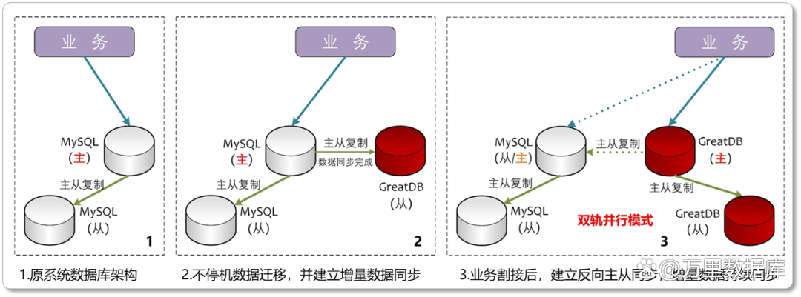

项目纪实｜中泰期货无缝切换GreatDB 铸造国产底座新标杆
在国家大力推进金融领域国产化的浪潮下，期货行业数字化转型驶入快车道，对数据平台的安全性、自主可控性提出了更高要求。
作为行业数据整合的关键枢纽，上海期货信息技术有限公司（SFIT）的数字化技术平台承载着全国期货公司的数据接入重任。SFIT根据自身平台技术特点，确立了MySQL技术路线数据库替代方案，选用万里安全数据库软件（GreatDB）完成系统适配，打造了安全可控、性能卓越的数据库解决方案，形成行业示范标杆。
中泰期货积极响应行业统一规范，借鉴上海期货公司的成功经验，紧密结合自身海量交易数据处理、毫秒级实时风险监控等核心业务需求，选择万里安全数据库软件（GreatDB）作为核心数据底座。
01# 项目亮点
万里安全数据库GreatDB不仅高度兼容MySQL生态，确保中泰期货现有庞大业务系统实现平滑迁移。
此外，GreatDB创新的混合负载架构（HTAP）、强大的高并发处理能力以及金融级的高可靠与高安全特性，更是为中泰期货的高频数据读写、复杂实时分析等严苛场景提供了坚实支撑，助力其在合规框架内实现数字化升级，保障业务全天候稳定高效运行。
02# GreatDB支撑中泰期货 实现“丝滑”国产化升级
中泰期货基于自身系统技术特点，选择兼容MySQL技术路线的国产数据库——万里安全数据库软件（GreatDB）开展国产化升级，GreatDB在兼容性、平滑迁移、高性能、高安全、高可靠等方面展现出卓越价值，完美解决了期货行业的特定痛点：
1、深度兼容MySQL生态，迁移“零”障碍
A、100%兼容MySQL：GreatDB高度兼容MySQL协议、数据类型、函数语法及存储过程。中泰期货海量的现有MySQL应用，几乎无需修改即可平滑迁移至GreatDB，最大程度规避了技术风险。例如，GreatDB完美支持MySQL特有的JSON数据类型与全文索引功能，确保复杂业务逻辑无缝衔接、稳定运行。
B、MySQL生态工具无缝衔接：原有基于MySQL的SQL语句、接口驱动（如JDBC/ODBC）及第三方运维工具（如Navicat、MyCat、MySQLDump等）均可直接使用，显著降低开发和运维团队的学习成本和适配风险，实现研发、运维团队“开箱即用”。
2、平滑迁移，业务“零”感知
A、自动化迁移工具链：依托GreatDTS等图形化数据迁移同步工具，提供全量+增量数据同步能力，支持实时数据校验与冲突检测。在中泰期货核心交易系统的关键迁移窗口期，GreatDTS保障业务中断时间小于30秒，数据一致性准确率高达99.999%。
B、“双轨并行，闪电回退”策略：
双向主从同步：万里数据库技术团队充分利用GreatDB与MySQL高度兼容的特性，在迁移前建立MySQL → GreatDB的实时同步，确保目标库数据持续更新。
业务零中断割接：实际割接时，仅需短暂修改应用连接指向GreatDB，并随即建立GreatDB → MySQL的反向同步。此方案确保源库和目标库数据时刻保持一致，业务全程在线。
无忧回滚保障：得益于反向同步，增量数据实时备份至原MySQL库。一旦需要，业务系统可“一键”快速回退至原MySQL环境，为中泰期货的数据迁移上了“双保险”。

C、渐进式迁移验证：采用“双写验证→灰度切换→回滚保障”三阶段迁移策略，平稳完成数十TB历史数据迁移，期间用户和业务系统全程“无感知”。
3、HTAP混合负载，性能全面超越
A、突破性能瓶颈： GreatDB融合MPP架构与向量化执行引擎，专为混合负载（HTAP）优化。中泰期货的关键复杂分析查询（如高要求的日终结算）效率获得革命性提升，处理速度较原有方案提升高达10倍。
B、并发与响应优势：在同等硬件条件下，GreatDB展现出优于原MySQL的性能表现，平均响应时间降低4%-10%，最大响应时间显著降低20%-60%，有效支撑了期货交易高峰期的海量并发请求。
4、金融级安全，筑牢安全防线
A、国密三级认证：GreatDB支持SM2/SM3/SM4全系列国密算法，提供从数据传输、数据存储到审计日志的全链路加密能力。
B、敏感数据守护：中泰期货至关重要的客户资金账户数据，通过GreatDB提供的表空间级国密加密功能进行保护，确保核心敏感信息“密不透风”，满足最严格的金融安全合规要求。
5、高可靠保障，业务永续无忧
A、三副本强一致：基于先进的Paxos共识算法，确保数据在多个副本间达成强一致性（RPO=0），彻底杜绝数据丢失风险。
B、快速故障恢复：在极端故障情况下，系统可在30秒内（RTO<30s）完成自动切换与恢复，最大程度保障中泰期货业务的高连续性。
03# 项目价值
1极速交付
在科学规划和高效执行下，中泰期货核心系统数据库国产替代项目实现了快速交付，顺利完成迁移割接。
2平稳运行
系统割接后运行稳定可靠，成功经受住了期货市场典型高峰交易时段的考验。基于GreatDB特有的“双轨同步”策略，增量数据稳定同步至原MySQL数据库，为业务系统提供了长期、灵活的安全保障。
3标杆价值
通过部署GreatDB，中泰期货不仅实现了核心系统的安全自主可控，更在系统性能、业务连续性保障（RPO=0， RTO<30s）、运维效率等方面获得显著提升，为期货行业国产化替代树立了可复制、可推广的行业新标杆。